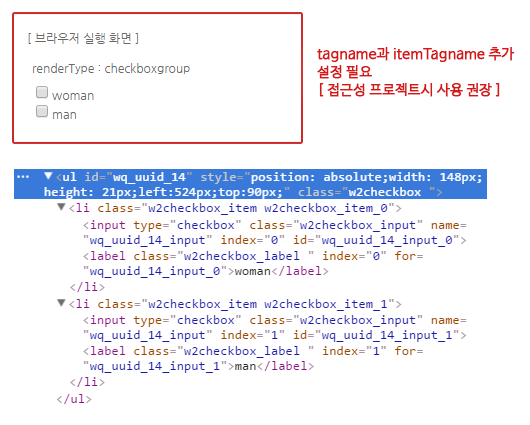

12.Checkbox
수정 일자 버전 (SP2)
WebSquare5 Studio : 20180117_1349_x86_B
WebSquare5 Engine : 5.0_2.2982B.20180223.154326_1.5
Checkbox는 각 항목에 선택할 수 있는 버튼이 있으며, 다중 항목 선택이 가능한 컴포넌트입니다. HTML에서 제공되는 Input 객체의 type=checkbox와 유사한 인터페이스를 제공합니다.
12.1Property
Property | Description |
|---|---|
appearance | xforms select1의 appearance속성 |
| 사용자 정의를 위한 영역입니다. |
| 항목을 나열 할 열의 수로 2로 정의 할 경우 2열씩 자동개행되어 표현된다.CheckBox설정 창에서도 Span Direction에서 설정 가능합니다. |
| 기본값은 false 이며 true 로 설정 시 컴포넌트 비활성화 시킵니다. |
displaymessage | [default:false, true] validate API를 호출 하였을 때 검증 실패에 대한 결과 메세지를 표시 할지의 여부. 기본적으로 엔진에서 정의 된 메세지가 표현되며 별도의 메세지를 정의하고자 할 때는 invalidMessageFunc속성을 이용합니다. |
escape | <>&"를 HTML Escape 문자로 변환하여 화면에 표시합니다. |
falseValue | 어떤 항목도 선택되지 않았을 때의 value. 기본적으로 항목이 선택되지 않았을 경우의 value는 ""(empty string)이지만 본 속성에 값을 설정하면 해당 값으로 value를 반환합니다. |
id | 컴포넌트의 ID로 전역객체로 할당되며 script에서 본 id로 컴포넌트에 접근이 가능합니다. |
ignoreTabIndex | tab이동시 포커스를 무시합니다. |
invalidMessage | validate API를 호출 하였을 때 검증 실패에 대한 결과 메세지를 본 속성의 값으로 표현되는 기능으로 displaymessage속성이 true로 되어있어야 한다. invalidMessageFunc과 동시 적용이 불가합니다. |
invalidMessageFunc | validate API를 호출 하였을 때 검증 실패에 대한 결과 메세지를 별도로 정의 한 Function에서 동적으로 표현 할 수 있는 기능으로 정의 된 function의 이름을 명시합니다. displaymessage속성이 true로 되어있어야 하며 invalidMessage와 동시 적용이 불가합니다. 사용자 Function(아래 예시 참조)에서는 this.getType()을 통해 검증 실패 type(아래 type 참조)과 this.getValue()를 value값을 가져와 메세지를 동적으로 생성하여 return 합니다. type)mandatory, allowChar, ignoreChar, minLength, maxLength, minByteLength, maxByteLength 예시)function fn_msg(){ var tmpType = this.getType(); var tmpValue = this.getValue(); if(tmpType == "mandatory"){ return "필수 검증 항목입니다."; } } |
itemTagname | renderType이 "checkboxgroup"일 때, 아이템의 tagname |
mandatory | [default:false, true]validate API를 호출 시 필수입력을 체크 할지의 여부. |
nextTabID SP2 | tab으로 이동시 이동할 컴포넌트 ID |
ref | DataCollection의 value 경로로 컴포넌트와 DataCollection의 value를 binding을 시킬 때 사용하며 "data:"라는 prefix는 필수로 붙여주어야 합니다. 작성 방법은 data:[DataCollection ID].[Key id 또는 Column id]와 같습니다. 예시)data:dataMap1.dept DataList와 연동 된 경우는 GridView에서 선택 된 Row의 값이 binding 됩니다. Instance Data와 연동 할 경우 연동 할 XML 데이터의 XPath를 명시합니다. 예시)res/userInfo/dept/@value |
| 기본값은 table로 표현이 되며, 그 외 native, checkboxgroup 으로 표현이 가능합니다.table : input Tag를 사용하지 않고 div Tag하위로 table Tag를 이용하여 항목을 표현합니다.native : <input type="checkbox">만 생성하는 형태이며, textbox 컴포넌트를 이용하여 label Tag를 직접 생성해야하며 title 속성을 사용하지 않는 경우에는 필수로 생성해야합니다. (웹접근성 지침 관련) checkboxgroup : 레이아웃을 위한 Tag를 개발자가 직접 결정하는 형태로 기본적으로 div Tag를 이용하여 구성되며 tagname과 itemTagname 속성을 이용하여 최상위 Tag와 항목별 Tag를 설정 가능합니다. |
| 항목을 나열 할 열의 수로 2로 정의 할 경우 2열씩 자동개행되어 표현됩니다.CheckBox설정 창에서도 Span Direction에서 설정 가능합니다. |
selectedindex | 초기 선택 될 항목의 index로 항목이 하드코딩되어있거나 DataList에 data가 미리 정의 되어있을 경우에만 동작 됩니다.주의 사항으로는 본 속성은 초기 컴포넌트가 브라우저에 표현되는 시점에 할당 된 Data를 기준으로 selected를 해주는 기능으로 화면 로딩 이후 API를 이용하여 항목을 생성하거나 통신 후 DataList에 data가 할당 되는 경우는 본 속성이 적용되지 않습니다. |
| Checkbox의 style 속성 |
| renderType이 "checkboxgroup"일 때, 렌더링 될 객체의 tagname |
| HTML의 title속성과 동일한 기능으로 명시 된 값을 브라우저에서 마우스 over시 툴팁형태로 표현합니다. |
toolTip | 웹스퀘어에서 만든 toolTip으로 컴포넌트의 추가정보를 명시한다. 마우스 over시 표현됩니다. |
tooltipClass SP2 | tooltipDisplay속성의 값이 true일 때, tooltip에 적용 할 class명. |
tooltipDisplay SP2 | [default:false, true] 선택된 값에 대한 tooltip 표현여부. |
tooltipItemLabel SP2 | tooltipDisplay = "true" tooltipItemLabel="tooltip"설정한 경우, checkbox item별로 마우스 오버시에 tooltipItemLabel에 설정한 "tooltip" 값이 tooltip에 나타난다. tooltipItemLabel = "" 인 경우, 마우스 오버시에 checkbox item의 label값이 tooltip에 나타난다. |
tooltipTime SP2 | tooltipDisplay속성의 값이 true일 때, tooltip이 보이는데 걸리는 초(second) |
| [default:true, false] 웹 접근성을 위해 checkbox의 항목(버튼)에 title의 표시 유무. |
useLocale | [default:false, true] Client 다국어를 이용하여 항목의 label에 표현되는 값을 다국어 key를 이용하여 표현 할 지에 대한 설정입니다. |
validator | 유효성 체크 함수명 |
12.2브라우저 캡쳐화면
checkbox 생성
[그림 12-1]checkbox_01
2. 체크박스의 내용 삽입 - 컴포넌트 더블클릭 or 마우스 오른쪽 버튼을 클릭 후 항목편집 클릭
[그림 12-2]checkbox_02
[그림 12-3]checkbox_03
3. 브라우저 캡쳐 화면
[그림 12-4]checkbox default 스타일
12.3class 적용과 스타일 변경
[그림 12-5]Class 를 usersample 이라고 지정했을 경우
/* checkbox css변경 */ .usersample .w2checkbox_main { background: url(/DesignGuide/images/check.gif) repeat-y 0 0 ; border:1px solid #6788be; } .usersample .w2checkbox_label{ padding-left:5px; }
[ row / col 설정 ]
row와 col의 설정으로 보이는 항목 개수 설정
마우스 오른쪽 버튼을 클릭하면 항목편집이라는 메뉴가 나오는데 클릭 후 Span Direction에서 rows(세로)나 cols(가로)중 선택하고 Span Count에 표시될 갯수를 적어주시면 됩니다.
[그림 12-6]checkbox_05
[그림 12-7]checkbox_06
[ property : renderType ]
렌더링되는 레이아웃 구조에 따라 “table”, “native”, “checkboxgroup” 세가지 renderType 속성을 지원합니다. 이 renderType 속성값에 따라 접근성을 지원하기 위한 사용법이 조금씩 달라지는데, 이를 설명하면 다음과 같습니다.
renderType=”table”
renderType 속성의 기본값으로서 <table> 태그로 레이아웃 구조를 생성하는 형태입니다. 행과 열을 rows와 cols 속성값으로 제어할수 있는 장점이 있지만, 레이아웃 용도로 <table> 태그를 사용하는 것은 접근성에 좋지 않으므로 사용을 지양해야 합니다
[그림 12-8]checkbox_07
renderType=”native”
레이아웃 구조를 위한 어떠한 태그 없이 순수 <input type=”checkbox”> 태그 하나만 생성하는 형태입니다. 레이블 텍스트는 textbox 컴포넌트를 이용해 직접 생성해야 합니다. Checkbox 컴포넌트에 title 속성을 사용하지 않을 경우 반드시 <label> 태그로 렌더링되는 textbox 컴포넌트와 연계해야 합니다.
[그림 12-9]checkbox_08
<xf:select appearance="full" id="checkbox1" renderType="native" name="fruit" selectedindex="-1">
<xf:choices>
<xf:item>
<xf:label></xf:label>
<xf:value>apple</xf:value>
</xf:item>
</xf:choices>
</xf:select>
<w2:textbox id="textbox1" label="사과" tagname="label" for="checkbox1" >
</w2:textbox>
<xf:select appearance="full" id="checkbox2" renderType="native" name="fruit" title=”바나나” selectedindex="-1">
<xf:choices>
<xf:item>
<xf:label></xf:label>
<xf:value>banana</xf:value>
</xf:item>
</xf:choices>
</xf:select>
<w2:textbox id="textbox2" label="바나나" tagname="span" >
</w2:textbox>renderType=”checkboxgroup”
레이아웃 구조를 위한 태그를 개발자가 직접 결정하는 형태로서, tagname과 itemTagname 속성이 추가적으로 사용됩니다. tagname과 itemTagname 속성의 사용법은 아래의 예를 참고해 이해하시길 바랍니다.

[그림 12-10]checkbox_09
[그림 12-11]checkbox_10
<xf:select appearance="full" id="checkbox1" name="fruit"
renderType="checkboxgroup" tagname="ul" itemTagname="li"
selectedindex="-1">
<xf:choices>
<xf:item>
<xf:label>사과</xf:label>
<xf:value>apple</xf:value>
</xf:item>
<xf:item>
<xf:label>바나나</xf:label>
<xf:value>banana</xf:value>
</xf:item>
</xf:choices>checkbox 및 radio를 생성 시 html 에서 파싱되는 태그는 기본적으로 table 구조입니다. 이는 웹스퀘어에서 다양한 이벤트 및 api 컨트룰을 유용하게 사용하는 목적에 있습니다. 하지만 접근성 프로젝트에서는 해당 태그들이 table 구조가 아닌 <input type="checkbox"...... 이나 <input type="radio".... 같은 전통html 기본태그만 준수범위로 인정합니다. 하여 웹스퀘어는 접근성프로젝트 맞게끔 랜더링을 위하여 renderType이라는 속성을 넣었고 값은 native, table, checkboxgroup, radiogroup 등을 제공하고 있습니다.
native 는 기존의html태그처럼 파싱되게끔 <input> 태그로 파싱되는 방식
table 은 웹스퀘어에서 제공하는 table태그 방식( 기본값이 table 임)
checkboxgroup & radiogrouop 는 웹스퀘어로 편집된 컴포넌트를 checkbox 및 label 혹은 radio 및 label 방식으로 파싱됨.
renderType=”checkboxgroup”>>>>(checkbox) renderType="radiogroup">>>>>>>(radio) renderType=”table” renderType=”native”
12.4CSS Overriding

[그림 12-12]checkbox_11
No | Class | Description |
|---|---|---|
1 | w2checkbox, ccbox | w2checkbox는 웹스퀘어 엔진에서 정의된 클래스입니다, 기본적으로 html 로 떨구는 시점에서 자동으로 부여됩니다. ccbox 는 사용자 정의 클래스 입니다. 해당 클래스를 이용하여 디자인을 바꿀 수 있습니다. |
2 | ccbox | 사용자 정의 클래스로 Stylesheet_ext.css 다음에 적용됩니다. 동일한 스타일 시트를 정의함으로써 overriding(덮어쓰기) 됩니다. |